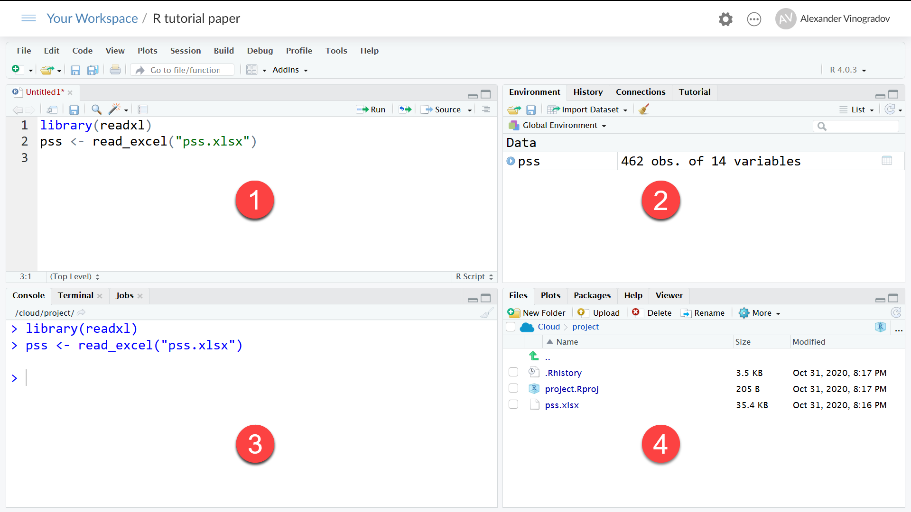

Необхідність власне у програмуванні на початкових етапах використання R не виникає, користувачу достатньо розуміти, як підготувати і імпортувати дані, викликати невелику кількість функцій для виконання перетворень змінних, статистичного аналізу і побудови діаграм, виводити табличні і графічні результати аналізу для їх наступного включення у текст статті або звіту. Пізніше на цій основі можна розвивати важливу для сучасних дослідників компетенцію програмування: створення власних функцій або розробки нових методів статистичного аналізу.
Етапи дослідження
Зазвичай емпіричне психологічне дослідження розгортається у такій послідовності: 1) Планування дослідження: визначення його дизайну, величини очікуваних ефектів і потрібного об’єму вибірки, підбір або створення якісних інструментів вимірювання психологічних конструктів; 2) Збирання і введення даних у комп’ютер; 3) Імпорт таблиці даних в середовище R; 4) Попередня обробка даних: використання статистичних процедур для перевірки якості даних (наприклад, пошук незвичних спостережень, які можуть негативно позначитися на результатах — так званих «викидів»), обчислення показників надійності для психологічних шкал; 5) Обчислення індексів (інтегральних показників, факторів), перекодування змінних, створення факторів (категоріальних змінних), категоризація неперервних ознак, агрегація даних, зміна структури таблиці даних (перевертання, витягнення по горизонталі чи вертикалі); 6) Відбір спостережень для аналізу (наприклад, виключення пропущених значень чи зосередження на цільовій сукупності досліджуваних); 7) Виклик статистичних процедур для опису даних, перевірки гіпотез і побудови статистичних моделей; 8) Створення фінального звіту за результатами. R за допомогою мови розмітки Markdown дозволяє генерувати такі звіти з таблицями, графіками і довільним текстом у форматі PDF, HTML і Word.
Інсталяція R
Перед початком роботи потрібно встановити R на комп’ютері з дистрибутивів в залежності від типу операційної системи (див. веб-сайт проекту https://cran.r-project.org/ або компанії Майкрософт https://mran.microsoft.com/). Набагато зручніше працювати з R у спеціальному середовищі розробника — RStudio (див. https://rstudio.com/). Проте для початківців найкращий варіант — скористатися хмарною версією R і RStudio, яку можна знайти за посиланням http://rstudio.cloud. Вхід до хмарної версії здійснюється після простої процедури реєстрації. Суттєвими перевагами цього способу є відсутність необхідності інсталювати і оновлювати програми на власному комп’ютері, постійний доступ до даних і скриптів аналізу через мережу Інтернет, а також можливість спільної роботи з викладачем чи іншими дослідниками.
Підготовка даних
Найбільш оптимальним форматом збереження даних для початківця є формат Microsoft Excel. Якщо цей табличний процесор не встановлений на вашому комп’ютері, можна скористатися безплатним сервісом Google Таблиці. Це особливо зручно, коли збирання даних здійснюється за допомогою сервісу опитувань Google Форми, оскільки відповіді респондентів відразу зберігаються у потрібному вигляді. Зібрані дані можна звантажити у форматі Microsoft Excel, або скористатися можливістю отримати доступ до них безпосередньо з R.
Приклад даних
Дані, на яких будуть демонструватися можливості R в цій статті, представляють собою результати опитування студентів НаУКМА, проведеного у 2019 році в рамках бакалаврської кваліфікаційної роботи Марією Жаб’юк за адаптованою версією шкали Perceived Stress Scale (Cohen et al., 1983).
Шкала PSS складається з 10 питань, мета яких – отримати інформацію про те, в якій мірі досліджувані сприймають різноманітні обставини свого життя як стресові.
1. Були засмучені через те, що сталось несподівано?
2. Bідчували, що неспроможні контролювати важливі речі у вашому житті?
3. Відчували себе знервовано чи в стані стресу?
4. Відчували себе впевнено стосовно того, що здатні впоратись з власними проблемами?
5. Відчували, що події відбуваються так, як вам треба?
6. Були впевненими, що не можете впоратись з усім тим, що маєте зробити?
7. Відчували себе здатними контролювати те, що вас дратує?
8. Були впевненими, що ви все контролюєте?
9. Були злими через події, які ви не могли контролювати?
10. Здавалось, що труднощі накопичуються так швидко, що ви не можете їх подолати?
Досліджувані обирали один з п’яти варіантів відповіді: ніколи (0 балів), майже ніколи (1 бал), іноді (2 бали), доволі часто (3 бали), дуже часто (4 бали).
Половина пунктів шкали має зворотний ключ (питання 4, 5, 7, 8) для контролю установки давати однакові відповіді.
Рисунок 1: Таблиця даних
Таблиця даних містить відповіді 462 досліджуваних (див. Рис. 1). На додаток до ідентифікаційного номеру досліджуваного і десяти питань шкали PSS в ній представлені стать (gender), курс (year) і фінансовий стан сім’ї студента (fin_state).
Переглянути і завантажити ці дані в форматі Excel можна за посиланням https://osf.io/egs3d з сайту Open Science Framework (OSF).
На прикладі цієї таблиці легко пояснити основні моменти підготовки даних дослідження для наступного статистичного аналізу в R:
Перший рядок таблиці має містити імена змінних (їхні скорочені позначення). Правила вибору імен для змінних наступні: вони мають починатися з літери (краще латинського алфавіту) чи крапки, після яких можуть йти інші літери, цифри 0-9, крапка чи символ нижнього підкреслювання. Пробіл в іменах змінних є неприпустимим. Імена варто обирати так, щоб можна було легко зрозуміти, яка змінна аналізується. Зверніть увагу, що R розрізняє великі і маленькі літери в іменах об’єктів, тому змінні gender, Gender і GENDER будуть сприйматися як різні.
За бажанням розгорнуту інформацію про змінну, наприклад мітки змінних та мітки значень, можна розмістити у додатковому аркуші книги (на Рис. 1 це аркуш Variable View). Пои що більшість функцій R, на відміну від пакету IBM SPSS Statistics, не використовують текстові мітки змінних (variable label), проте це обмеження при необхідності можна легко обійти.
Перший стовпчик таблиці має містити унікальний код досліджуваного, за яким його можна ідентифікувати при здійсненні злиття, відбору, чистки даних чи внесенні додаткової інформації про учасників, що може з’явитися пізніше. Важливо зберігати анонімність досліджуваних, якщо дані будуть розповсюджуватися, тому ідентифікувати їх краще за все числами або спеціальними кодами.
Якщо значення певної змінної у досліджуваного з тих чи інших причин відсутнє, клітинку потрібно лишити пустою. При імпорті даних в R пусті клітинки отримають спеціальне значення NA («Not Available»), яке буде враховуватися при обчисленнях. Також відсутні значення можна закодувати рядком NA або будь-яким числом, яке буде вказуватися при імпорті даних як ознака пропуску. Познайомимося тепер з інтерфейсом програми RStudio (див. Рис. 2). Після входу у хмарну версію користувач потрапляє на сторінку з переліком своїх проектів. Для створення нового проекту треба клацнути кнопку New Project, після чого на екран завантажується застосунок RStudio. Він має рядок меню, панель інструментів і три віконця з вкладками. За замовчанням з лівого боку розташовано вікно консолі, в якому користувач вводить команди і отримує текстові результати виконання команд і повідомлення системи. Цей режим роботи не дуже зручний для початківця, тому варто в якості першого кроку відкрити додаткове вікно для введення тексту майбутнього скрипту (сценарію, програми) аналізу даних. Для цього оберіть в меню застосунку RStudio послідовність команд File – New File – R Script. На Рис. 2 це вікно позначено кружечком з цифрою 1. Поки вміст цього вікна ви не зберегли у файлі, його назва буде Untitled 1.

Рисунок 2: Інтерфейс RStudio
У віконці 1 користувач вводить текст сценарію обробки своїх даних, запускає на виконання окремий рядок, блок рядків чи увесь сценарій, а результати виконання команд будуть з’являтися в інших віконцях. Так, у віконці №3 відображається луна виконаних команд і їхні текстові результати, у віконці №2 (вкладка Global Environment, Глобальне Середовище) з’являтимуться створені під час аналізу об’єкти (наприклад, таблиці з імпортованими чи проміжними даними).
Віконце №4 містить найбільшу кількість корисних для початківця вкладок. Тут відображаються файли у поточній папці (вкладка Files), побудовані графіки (вкладка Plots), встановлені пакети (вкладка Packages), довідкова інформація (вкладка Help), згенеровані функціями веб-сторінки (вкладка Viewer).
Для проведення аналізу у хмарній версії RStudio підготовлений файл даних у форматі Excel слід спершу завантажити у хмарне сховище. Для цього у віконці №4 на вкладці Files клацніть кнопку Upload («завантажити»), оберіть файл з даними (наприклад, файл pss.xlsx), який знаходиться на вашому комп’ютері і дайте підтвердження. Після успішного завантаження ім’я файлу з’явиться у переліку файлів вкладки Files.
Наступний крок – імпорт даних з файлу. Цей крок зазвичай здійснюється за допомогою виклику відповідної функції з потрібними аргументами, але для початківця простіше обрати в меню застосунку команду File – Import Dataset – From Excel. Якщо RStudio виведе діалогове вікно з питанням про оновлення необхідних для імпорту пакетів, дайте ствердну відповідь і зачекайте, поки RStudio виконує компіляцію і встановлення пакетів.
Діалогове вікно імпорту файлів Excel має декілька елементів керування. Перш за все знайдіть потрібний файл (в нашому випадку це pss.xlsx), клацнувши кнопку Browse. Попередній перегляд вмісту файлу буде виведене у таблиці Data Preview. В групі опцій імпорту елементи мають таке призначення: поле Name має містити ім’я об’єкту – таблиці даних, в яку після імпорту потрапить вміст файлу. У випадаючому списку Sheets можна обрати ім’я аркушу книги для читання (за замовчанням читатиметься перший аркуш). Оберіть аркуш з назвою «Data View».
Поле NA має містити код, яким ви позначили пропущені дані у файлі. Якщо ви скористалися моєю порадою і пропущені значення кодували за допомогою пустих клітинок в таблиці Excel, це поле можна лишити незаповненим. Нарешті, встановлений прапорець First Row as Names повідомляє процедурі імпорту, що імена майбутніх змінних таблиці даних слід брати з першого рядку файлу Excel. Зверніть увагу на те, що у віконці Code Preview знаходиться декілька рядків команд на мові R, які власне і здійснюють імпортування даних. На їхньому прикладі ви почнете знайомитися з мовою R. Скопіюйте їх у текст вашої першої програми аналізу даних. Я трохи змінив зовнішній вигляд команд для кращої читабельності і додав коментарі (пояснювальний текст, що йде після символу #)– див. Фрагмент коду 1:
# Завантаження пакету для імпорту даних в форматі MS Excellibrary(readxl)# Імпорт даних з файлуpss <-read_excel(path ="pss.xlsx", sheet ="Data View")# Виведення вмісту об'єкту на екранpss
Розберемо цей фрагмент програми, з якого практично завжди починається аналіз даних. По-перше, слід запам’ятати, що дві представлені в ньому команди library() та read_excel() називаються функціями. Функції відіграють надзвичайно важливу роль в R, кожна з них має своє особливе призначення — імпорт чи перетворення даних, побудова діаграм, виконання статистичного аналізу і виведення результатів у потрібному вигляді здійснюється відповідними функціями. Для цього функціям при виклику передається інформація у вигляді аргументів – таблиць даних і змінних у них, а також вказівок на бажаний характер переробки вхідної інформації і виведення результатів (опцій).
Аргументи функції йдуть у послідовному порядку і можуть мати свої власні імена. Наприклад, функція read_excel() має аж дванадцять аргументів, які визначають безліч корисних аспектів її поведінки в різних обставинах (наприклад, назви і типи стовпчиків таблиці даних, кодування пропущених значень тощо):
Ми використали лише два її найважливіших аргументи з іменами path (шлях і ім’я файлу Excel, з якого відбувається імпорт даних) і sheet (ім’я аркуша книги). Оскільки ці два аргументи йдуть першими, можна було б і не вказувати їхні імена при виклику функції, але обов’язкове іменування аргументів – корисна практика для початківців, оскільки дозволяє краще розуміти створений скрипт. Зауважте, що в цьому прикладі обом аргументам функції передаються рядкові значення, взяті у подвійні лапки. Знак = («дорівнює») відділяє ім’я аргументу і значення, яке йому передається, а один аргумент від іншого відділяється комою.
Деякі аргументи функції мають значення «за замовчанням», тобто, якщо користувач при виклику функції не вказує цей аргумент, його значення встановлюється автоматично. Наприклад, аргумент col_names має логічне значення за замовчанням TRUE (істина, тобто – «так, в файлі перший рядок містить імена стовпчиків»). Аргументи за замовчанням має сенс вказувати тільки тоді, коли ви хочете передати їм якесь інше значення.
Виклик функції може давати безпосередній і побічний результат. Функція, як кажуть програмісти, повертає безпосередній результат. В R це може бути вектор, що складається тільки з елементів одного й того ж типу – чисел, рядків тексту або логічних значень (так звані «атомарні вектори»). Функція також може повертати вектор, елементами якого є об’єкти різного типу – вектори, матриці, списки. Такі особливі вектори називаються списками (list). Ви звернули увагу, що елементами списку можуть бути інші списки? Списки дуже корисні для зберігання комплексної інформації і будуть зустрічатися нам весь час при аналізі даних в R – як структура для зберігання даних, аргумент функцій і результат, який функція повертає. Наприклад, функція read_excel() повертає особливий тип списку під назвою tibble, в якому R зберігає таблицю даних емпіричного дослідження.
До речі, не лякайтеся терміну «вектор», для вас зараз це має означати лише послідовність певних значень: чисел, рядків, об’єктів. Вектори в R відіграють різні ролі – це можуть бути змінні, які піддаватимуться аналізу, опції для функцій, або результати, які повертають функції. Найпростіший спосіб створити вектор чисел (чи рядків, логічних значень тощо) – скористатися особливою функцією c(). Їй в дужках передаються через кому аргументи, які функція зчеплює в один об’єкт-вектор. Наприклад, вираз c(1, 2, 3, 4, 5) створить вектор з п’яти цілих чисел від 1 до 5. Існує зручний скорочений спосіб створення таких послідовностей цілих чисел, який ви будете часто використовувати для того, щоб звернутися до послідовних стовпчиків таблиці даних. Запис 1:5, наприклад, згенерує таку саму послідовність з п’яти цілих чисел:
c(1, 2, 3, 4, 5)
[1] 1 2 3 4 5
1:5
[1] 1 2 3 4 5
Результат, який повернула функція, треба пов’язати з ім’ям, щоб його можна було використовувати надалі в скрипті. Якщо цього не зробити, він просто виводиться на екран. Для зв’язування об’єкту-результату і обраного аналітиком імені в R є спеціальний оператор присвоєння, який складається з двох символів – знаку «менше» або «більше» та дефісу – і виглядає, як стрілка: <- та ->. У короткому фрагменті скрипту, який ми розбираємо, за допомогою оператора присвоєння імпортовані з Excel дані записуються в об’єкт на ім’я pss. Цей об’єкт після імпорту і зв’язування з іменем починає існувати у Глобальному Середовищі (на Рис. 2 ви можете побачити його у віконці №2). Тепер до об’єкта pss можна звертатися, передаючи його іншим корисним функціям.
Окрім безпосереднього результату, який функція повертає, вона може бути корисною своїми побічними ефектами. Наприклад, функція hist() в якості побічного результату будує спеціальний графік – гістограму – для переданого їй вектору даних.
Залишилося пояснити перший рядок фрагменту нашої програми. Що означає команда library(readxl)? Справа в тому, що функцій в R величезна кількість. Тому їх групують за призначенням у так звані «пакети» (packages). Частина пакетів є базовими і встановлюються при інсталяції R і RStudio. Необов’язкові пакети (а їх зараз нараховується десятки тисяч) потрібно спочатку встановити із спеціальних сховищ в Інтернеті («репозиторіїв») і підключити до сеансу роботи, щоб функції, які в них включені, стали доступними для виклику. Функція library() якраз і призначена для підключення пакету readxl до сеансу роботи. Як зрозуміло з назви пакету, він містить функції для читання файлів у форматі Microsoft Excel.
Для відтворення процедур аналізу даних, які розглядаються в цій статті, вам необхідно інсталювати з репозиторію такі пакети: readxl, psych, pwr, dplyr, car, jmv, MBESS, MOTE. Кожен з них, в свою чергу, може залежати від інших пакетів, які будуть встановлюватися автоматично. Найпростіший для початківця спосіб інсталяції пакета передбачає використання меню застосунку RStudio. Оберіть в ньому команду Tools – Install Packages і вкажіть назви пакетів у діалоговому вікні, що з’явиться на екрані. Після інсталяції назви нових пакетів будуть додані до списку у бібліотеці користувача (див. вкладку Packages віконця №4).